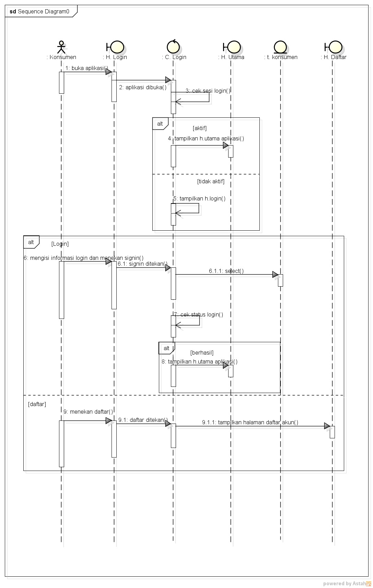

Hasil Menyadur :
1. Pertemuan 7 hari terakhir pengumpulan nilai kehadiran dan tugas via github.
2. Ingat absen readme.md dan saduran index.thml
3. Pertemuan 9 sudah mulai membuat nilai uas (presentasi kelompok).
4. Jawaban bisa berbeda2, tergantung perspektif masing-masing.
5. tinyint(tipe data di mysql) -> bil.bulat paling kecil hanya sampai 127\
6. sequence menggambarkan urutan proses yang ada dihalaman/default, sangat berhubungan dengan usecase+rancanganlayar+classdiagram
7. Latihan
